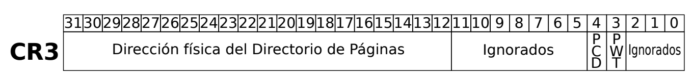
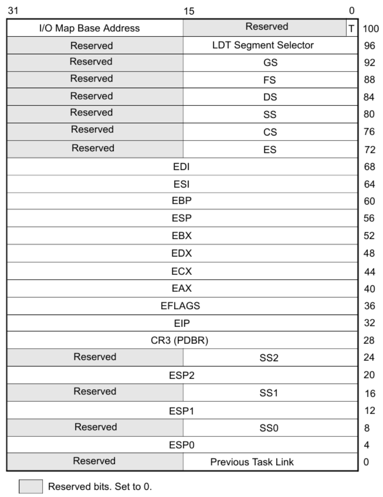
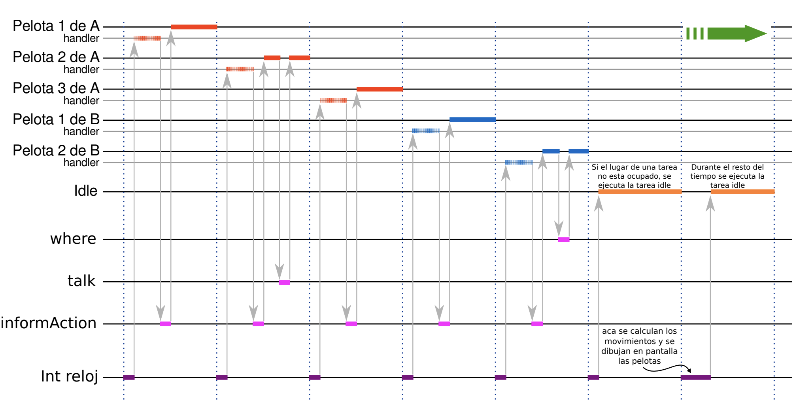
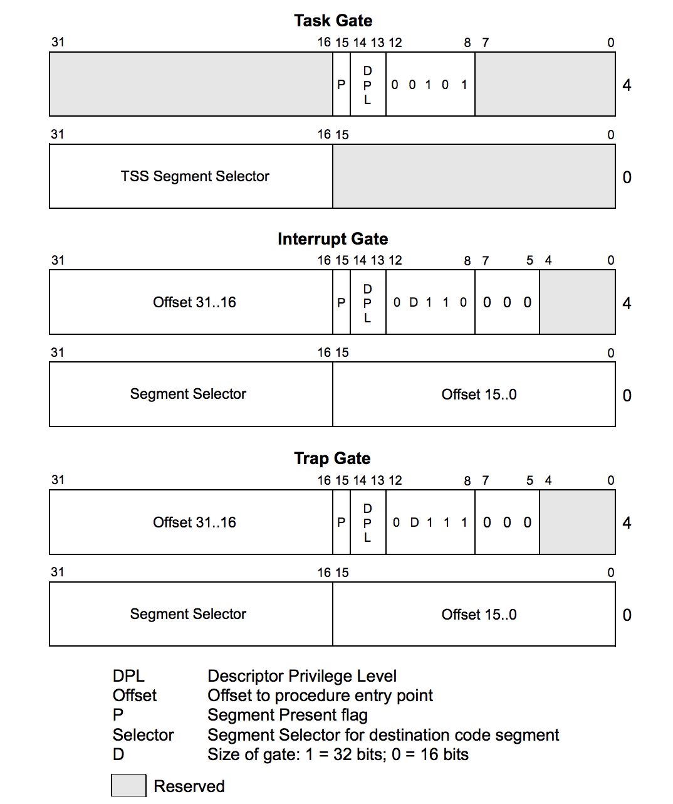
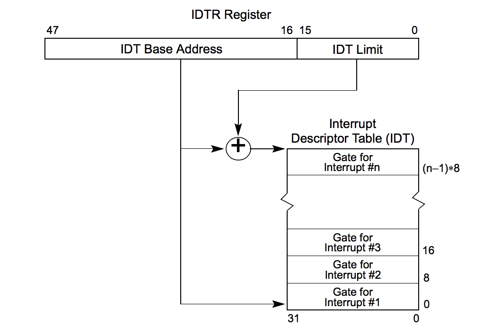
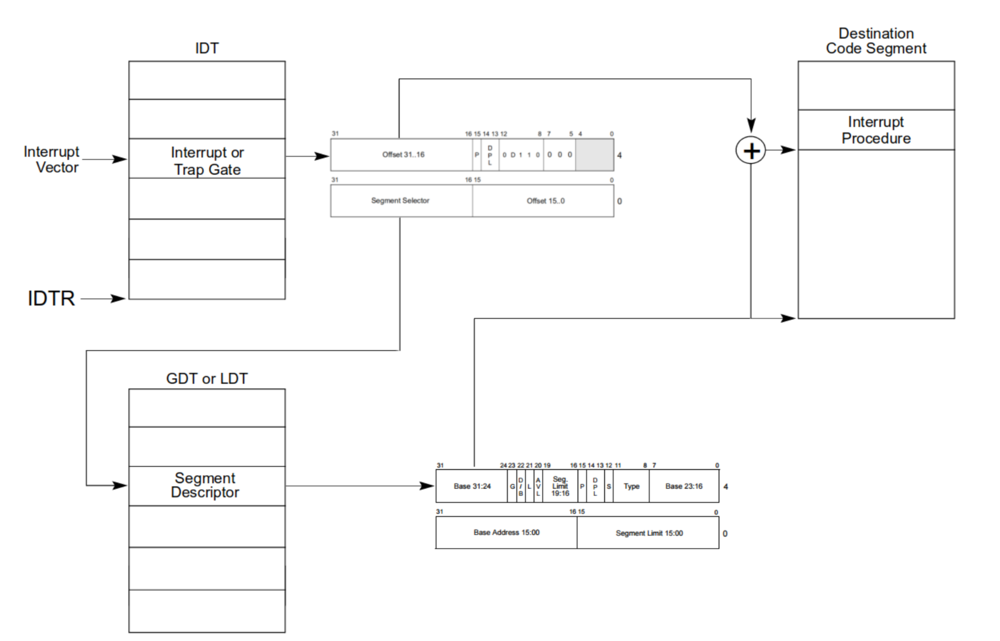
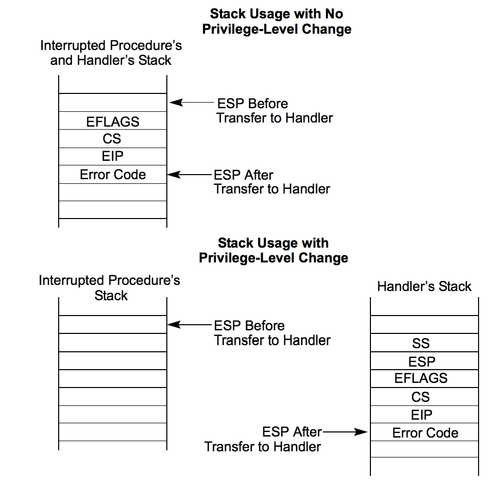
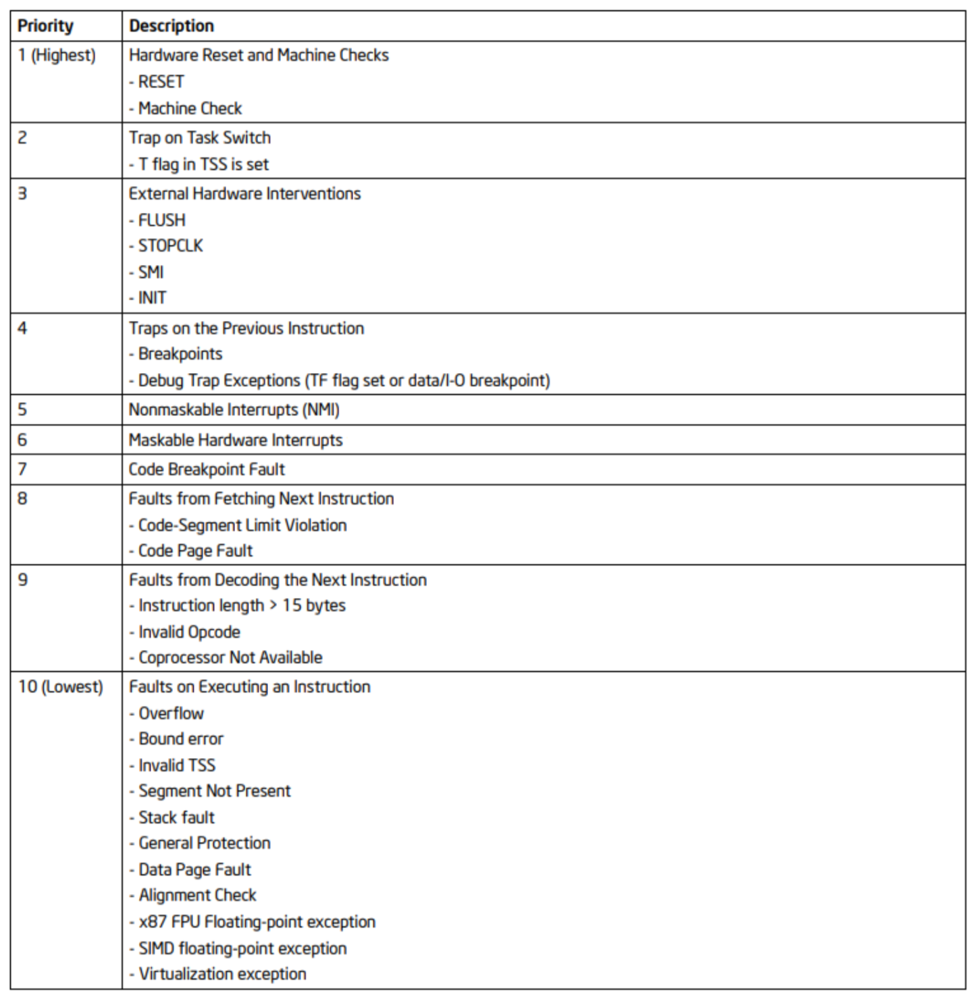
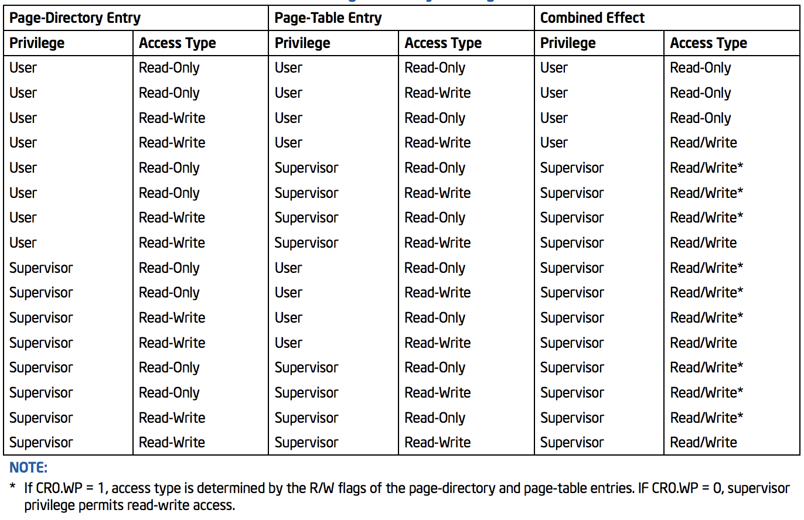

Orga II - Systems Programming
Resumen para el segundo parcial.
Contenidos
Arquitectura
Overview

Registros
EFLAGS

CR0

PG: PagingCD: Cache DisableNW: Not Write ThroughAM: Alignment MaskWP: Write ProtectNE: Numeric ErrorET: Extension TypeTS: Task SwitchedEM: EmulationMP: Monitor CoprocessorPE: Protection Enable
Modos
Modo real
Para pasar de dirección lógica a física en modo real,
cs << 4 + offset
Esto es porque las direcciones son de 20 bits, y el selector de segmento son 16.
Modo protegido
Para cambiar de modo real a protegido,
-
Setear el bit
PEde CR0x86asm mov eax, cr0 ; Copia del valor de CR0 para setear el bit or eax, 1 ; Prender el primer bit mov cr0, eax ; Persistir el valor en CR0 -
Jump far a la siguiente instrucción
x86asm jmp <selector>:<offset>Memoria
Tipos de direcciones:
- Física
Es la dirección que será decodificada por el hardware para acceder a memoria RAM o ROM según corresponda. El procesador pone esta dirección en los pines de address cuando su UC habilita la salida del bus de direcciones.
- Virtual o Lineal
- Logica
MMU
La MMU (Memory Management Unit) es la encargada de traducir direcciones.
Está compuesta por dos unidades
- Unidad de Segmentación (Logica -> Lineal)
- Unidad de Paginación (Lineal -> Física)
Donde la resolución de direcciones se hace de la siguiente forma:

Segmentación
Una dirección en está compuesta de un selector de segmento, y un offset.
15 0 31 0 selector : offset
Con lo cual se necesitan 48 bits.
Selectores
Tienen el siguiente formato

Donde,
index: Indice en la tabla de descriptores de segmento.\ Como tiene 13, bits, cada tabla puede alojar 2^13 descriptores.TI- Table Indicator\ Selecciona en que tabla de descriptores debe buscarse.0: GDT (Global Descriptor Table)1: LDT (Local Descriptor Table) no se usa nuncaRPL- Requested Privilege Level\ Nivel de privilegio que declara tener el dueño del segmento.
Selectores disponibles:
CS: Code SegmentSS: Stack SegmentDS: Data Segment (default)ES: DatosGS: DatosFS: Datos
Estos tienen una parte escondida, donde se guardan datos de caché como la base, limite, y detalles de acceso.
Descriptores
Los selectores de segmento son una referencia a un descriptor de segmento.
Estos se almacenan en una tabla, ya sea la GDT (Global Descriptor Table)
o la LDT (Local Descriptor Table), cuya dirección está especificada en el
GDTR y LDTR. Para cargarlos,
lgdt - Load GDT lldt - Load LDT
El primer descriptor de la tabla debe ser nulo.

Base(Partida en 3) Es la dirección en la cual comienza el segmento.LimitEs el máximo offset válido desde la base. (La última dirección válida, el tamaño del segmento - 1)
Atributos
G: Granularity0: El máximo offset es igual al límite-
1: El limite está expresado en multiplos de 4K.\ Luego el máximo offset se puede calcular de varias maneras((limit + 1) * 4kb) - 1 ((limit + 1) << 12) - 1 (limit << 12) + 0xFFF -
D/B: Default / Big 0: Default, segmento de 16 bits.1: Big, segmento de 32 bits.L: Solo utilizado en IA-32e.AVL: Available. No es usado para ningún proposito en específico, queda en el programador darle el uso apropiado.P: Present.1: El segmento está presente en memoria RAM.0: El segmento está en memoria virtual (disco).\ Esto hace que genere una excepción#NP(Segment Not Present) para que luego el kernel realice el swap entre el disco y RAM.DPL: Descriptor Privilege Level.\ Nivel de privilegio que debe tener el codigo que pretende acceder a este segmento, de 0 (más privilegiado) a 3 (menos privilegiado).S: System, activo bajo.\ Define si es un segmento de código/datos o de sistema. Determina los valores posibles deType.0: System.1: Codigo / Datos.Type: Depende de si es de sistema o de código / datos-
Codigo / Datos

A: Accesed- Data
E: Expand Down, cuando va a ser utilizado como pila. El puntero de direcciones decrece a medida que va expandiendose el segmento. {{TODO: Ver en protección}}W: Writable. Indica si el segmento de datos puede escribirse. Si está en0, contiene datos pero es Read Only.- Code
C: Conforming. Ajustable Ajustan su nivel de privilegio al del código que lo invoca. {{TODO: Ver en protección}}R: Readable- System
Valor Descripción 0b0000Reservado 0b0001TSS de 16 bits disponible 0b0010LDT 0b0011TSS de 16 bits busy 0b0100Call Gate de 16 bits 0b0101Task Gate 0b0110Interrupt Gate de 16 bits 0b0111Trap Gate de 16 bits 0b1000Reservado 0b1001TSS de 32 bits disponible 0b1010Reservado 0b1011TSS de 32 bits busy 0b1100Call Gate de 32 bits 0b1101Reservado 0b1110Interrupt Gate de 32 bits 0b1111Trap Gate de 32 bits
Mecanismo
GDT
- El procesador ve el bit TI para ver a que tabla tiene que ir
- Como es la GDT, busca en el
GDTRla dirección base física donde comienza. - Indexa en la tabla con la parte del selector de segmento que indica el índice
- El procesador lee el descriptor de segmento
- La Unidad de protección realiza sus chequeos {{TODO: Ver en protección}}
- El procesador suma el valor del offset contenido en la dirección lógica con la dirección base del segmento, así formando la dirección lineal.
LDT
En la LDT es parecido, solo que usa el registro LDTR para indexar en la GDT,
y luego el descriptor le dice donde está la LDT y el offset dentro de la misma
es tomado del índice de la dirección.
Cache
El procesador cuenta con registros de cache ocultos para no tener que ir cada vez a memoria a buscar las tablas.
Flat
Un modo que se suele usar es la segmentación flat en la cual todos los segmentos abarcan toda la memoria.
Paginación
Para habilitarla, hay que setear en 1 el bit 31 del CRO, PG.
Si no se está en Modo Protegido, entonces se lanza una #GP
Tiene distintos modos
- 32 bits: Es el modo original del 80386.
- PSE: Permite tener tamaños de página mayores
- PAE
- IA-32e
El tamaño de página estándar es de 4KB.
Estructuras
Es necesario poder almacenar
- Dirección base
- Cada página comienza en una dirección siguiente a la del último byte de la anterior. Osea que inician en direcciones alineadas a 4KB.
- Como 4KB = 2^12, los 12 bits menos significativos de la dirección son siempre 0.
- Se le llama entonces page frame a los bits mas significativos, que determinan la base.
- Limite: No es necesario especificarlo pues tienen tamaño fijo.
- Atributos
Entonces con 20 bits para la dirección base, 12 bits para los atributos se puede conformar un descriptor de páginas de 32 bits.
Como las páginas son de 4KB, (2^12 bytes), al dividir el espacio lineal de 4GB (2^32) en páginas quedan 2^20. Esto llevaría a una tabla de descriptores muy grande, 2^20 descriptores de 4B son una tabla de 4MB, y habría una por tarea. Por esto se hace paginación por niveles.
- Page Directory (PD)\ Ocupa 1 página (4KB) con lo cual puede almacenar hasta 4KB / 4B = 1024 Page Directory Entries (PDE).
- Page Table (PT)\ Ocupan también 4KB, con lo que pueden almacenar 1024 Page Table Entries (PTE) de 4B cada uno.
Se piensa como un sistema de administración de memoria por tarea, de forma que cada una tenga su propia estructura de páginas. Esto robustece la seguridad del SO en la administración de memoria.
CR3

Tiene dos bits de control de cache
PWTPage-Level Write ThroughPCDPage-Level Cache Disable
PDE y PTE
PSPage Size0: PT de 4KB1: PT de 4MBPATPage Attribute Table (0)GGlobal\ Hace que no se flushee de la TLB cuando se cambia CR3. (ej.printf)DDirty\ Indica que la página fue modificada. A la hora de desalojar una página de RAM, si no fue modificada no la copia a disco.AAccessed\ Se setea cada vez que la página fue accedida. El SO puede contabilziar los accesos para así saber cual página desalojar de ser necesario.U/SUser / Supervisor. Privilegio de la página0: Supervisor (Kernel). Es equivalente a DPL 01: Usuario. Es equivalente a DPL 1 a 3.
El procesador chequea el CPL del segmento de código para autorizar o no
el acceso a la página. {{TODO: Protección}}
- R/W Readable / Writable.
- 0: Read Only
- 1: Puede ser escrita.
No hay permisos de ejecución.
- P Present
Indica si la página está en memoria (P=1). En caso de no estarlo, se genera
una excepción #PF (Page Fault) cuando se intenta acceder a una dirección que
tenga al menos un P=0 a lo largo de las estructuras.
Tiene que estar en 1 cuando la configuramos.
PCD y PWTIgual que en CR3
Administración
Se inicia una tarea con lo mínimo indispensable, una PD con una sola PT valida, y luego se van agregando PTEs dinámicamente, cada una habilitando 4KB más, hasta llegar a 4MB de memoria. Llegado a ese límite, si se solicita más, se crea otra PDE, que permite otros 4MB más.
Traducción
El procesador necesita conocer para cada tarea la dirección física en donde
se encuentra el Page Directory. Para esto está el registro de control CR3.
La dirección lineal se divide en tres campos:
- Indice en el PD
- Indice en el PT
- Offset dentro de la página

TLB
Cada vez que se quiere direccionar, es necesario acceder a memoria dos veces para leer el PDE y el PTE. Para evitarlo, en la unidad de paginación hay un cache de traducciones, el Translation Lookaside Buffer (TLB)
En este se guarda para un directorio y una tabla, la dirección física en la cual comienza la página.
directorio_1 tabla_1 dir_fisica_base
.
.
.
directorio_n tabla_n dir_fisica_base
La escritura de un valor en el registro CR3 flushea el contenido, excepto
aquellas entradas que se setean como globales.
Identity Mapping
Es el equivalente a segmentación flat, consiste en que la dirección lineal coincida con la física.
Combinación
A fin de cuentas para resolver una dirección, se emplean ambos sistemas
Tareas
El SO tiene un scheduler que se encarga de conmutar entre una lista de tareas a ejecutar, ejecutando cada una por un intervalo fijo de tiempo, por lo general atado a interrupciones del clock.
- Tarea: Es una unidad de trabajo que un procesador puede despachar, ejecutar, y detener a voluntad.
- Espacio de ejecución: Es el conjunto de segmentos de código, datos y pila que componen a la tarea.
- Contexto de ejecución: Es el conjunto de valores de los registros internos del procesador. Para poder suspender la ejecución de una tarea y poder resumirla, es necesario almacenarlo.
- Espacio de contexto: Donde es almacenado el contexto de ejecución.
Estructuras
TSS
La TSS (Task State Segment) Es el lugar de memoria donde se guarda el contexto
de cada tarea, su tamaño mínimo es 0x68 (su mínimo Limit es 0x67).

El EFLAGS por defecto es 0x00000002 y con interrupciones habilitadas es
0x00000202.
Descriptor de TSS

El bit B (Busy) sirve para evitar recursividad en el anidamiento de tareas.
TR
En el Task Register se guarda selector de segmento de la GDT donde reside el descriptor de TSS de la tarea actual.

Se modifica mediante las instrucciones
ltr Load Task Register str Store Task Register
Por ejemplo
mov ax, <selector> ltr ax
Despacho
El procesador puede despachar tareas de las siguientes formas:
calla la tarea.jmpa la tarea.- Call a un interrupt-handler task (procesador)
- Call a un exception-handler task (procesador)
- Return con
iretcuando está prendido el flagNTdeEFLAGS
Por ejemplo, con un jmp
jmp 0x20:0 ; El offset no importa
Pero si quisieramos hacerlo a un selector que no se puede poner como constante, es necesario hacerlo pasándolo por memoria. Esto es porque es de 48 bits.
selector: 0x0000 offset: 0x00000000 mov ax, selector jmp far [offset] ; hacemos jmp a offset porque lo lee como little endian
Primera tarea
Para despachar la primera tarea, es necesario crear una tarea inicial para proveer una TSS en donde el procesador pueda guardar el contexto al momento de conmutar la primera.
Conmutación
- El procesador analiza el valor que se debe colocar en el registro CS como
parte de la ejecución de un
jmp,calloiret(con NT = 1). o al que obtiene de una interrupt gate o trap gate. - Busca el descriptor de la TSS en la GDT
- Si es un Task Gate, vuelve a buscar en la GDT donde debe encontrar un descriptor de TSS.
- Si es un selector de TSS lo que intenta cargarse en el CS, busca en la GDT el descriptor de TSS.
- Emplea el TSS actual para almacenar el estado del procesador.
- Setea el bit
CR0.TS(Task Switch) - Carga el nuevo TR y descriptor
- Aplica el contexto almacenado en el nuevo TSS.
Anidamiento
{{TODO}}
Registros XMM
Los registros xmm no están en la TSS, ya que aumentaría los tiempos de conmutación entre tareas.
Lo que hace entonces el procesador, es que cada vez que ejecuta una instrucción
que utiliza algún registro xmm, se fija si se realizó un task switch viendo
el bit CR0.TS. Si hubo, genera una excepción #NM, en cuyo handler se
switchea el banco de registros, y se limpia CR0.TS.
Para esto se usan las instrucciones
fxsave Guarda en memoria todos los registros xmm (bloque de 512 bytes) fxstr Recupera de memoria los registros xmm
Scheduler
Ejemplo del juego

Interrupciones
Las interrupciones pueden provenir de
- Hardware
- Software
- Internas
Y se identifican mediante un valor numérico de 8 bits denominado tipo. (2^8 = 256 máx.)
Fuentes
Hardware
Señales eléctricas enviadas desde los dispositivos de hardware, generalmente manejadas por un controlador externo que las prioriza y envía a la CPU secuencialmente de acuerdo a ese criterio.
El tipo es provisto por el hardware que interrumpe a través del pin INTR.
Asincrónicas y no determinísticas.
Software
Se producen cuando se ejecuta la instrucción int <type>.
Luego el tipo Acompaña al opcode de la instrucción. Por ejemplo, int 0x80
en linux.
Determinísticas.
Internas (Excepciones)
Son conocidas como excepciones. Generadas por la propia CPU como consecuencia de una situación que le impide completar la ejecución de la instrucción en curso. Cada excepción tiene su tipo asociado (predefinido).
Ej: División por cero, page fault, violación de protección, etc.
Clasificación
-
Fault
Puede corregirse permitiendo al programa retomar la ejecución de esa instrucción sin perder continuidad. El procesador guarda en la pila la dirección de la instrucción que produjo la falla.
-
Trap
Producida inmediatamente a continuación de una instrucción de trap. Algunas permite que el procesador retome la ejecución sin perder continuidad pero otras no. El procesador guarda en la pila la dirección de la instrucción a ejecutarse luego de la instrucción trapeada.
-
Abort
No siempre puede determinar la instrucción que la causó, ni permite recuperar la ejecución de la tarea que la causó. Reporta errores severos de hardware o inconsistencias en estructuras de datos del sistema.
IDT
Debe definirse una tabla en memoria llamada IDT (Interrupt Descriptor Table)
la cual almacena descriptores de sistema (S = 0).
Solo tiene 256 entries ya que esa es la cantidad de tipos que reconoce.
- Interrupt Gate
- Trap Gate
- Task Gate
Si se definen en esta tabla descriptores que no sean esos, se genera una #GP
al intentar de vectorizar esa interrupción.

Para llegar a la IDT, se usa el registro IDTR.

Vectorización
Se llama vectorizar una interrupción al proceso de buscar su rutina de atención asociada.
En caso de que sea una interrupt o trap gate:

Y si es una task gate

Privilegios y stack
Cuando el procesador hace call a la rutina de atención de interrupción, hay
dos posibilidades, se puede o no realizar un cambio de privilegio.
Por ejemplo, si un código nivel usuario es interrumpida, la rutina de atención será de nivel supervisor, y entonces sucederá un cambio de privilegio.
Al hacerse un cambio de privilegio, se hace un cambio de stack.
- Con cambio de privilegio
- Se obtiene el
SSy elESPde laTSSde la tarea actual (interrumpida). - Se pushean en el nuevo stack.
- Se guarda el estado actual,
EFLAGS,CS,EIPen el nuevo stack - Si la excepción hace que se guarde un código de error, se pushea.
- Sin cambio de privilegio
- Se guarda el estado actual,
EFLAGS,CS,EIPen el nuevo stack - Si la excepción hace que se guarde un código de error, se pushea.

Para retornar de una rutina de atención se debe usar iret.
Código de error
Está compuesto de 3 bits
0 1 2 EXT IDT TI
-
EXT: External Event\ Indica que la excepción fue causada por un evento externo al procesador. -
IDT: Descriptor Location\ Indica que el campo Segment Selector Index se refiere a un descriptor de gate en la IDT, cuando está en 0 indica que dicho campo se refiere a un descriptor en la GDT o en la LDT de la tarea actual. -
TI: Table Indicator (GDT/LDT)\ Solo cuandoIDTestá en 0. 0: GDT1: LDT
Prioridades
Que pasa cuando llega más de una interrupción?

Tipos predefinidos
Detalle sobre los tipos en la sección 6.15 del manual de Intel Systems Programming Guide.
| Vector | Mnemonic | Description | Type | Error Code | Source |
|---|---|---|---|---|---|
| 0 | #DE |
Divide Error | Fault | No | div, idiv |
| 1 | #DB |
Debug Exception Fault | Trap | No | Instruction, data, and I/O breakpoints; single-step; and others. |
| 2 | — | NMI Interrupt | Interrupt | No | Nonmaskable external interrupt. |
| 3 | #BP |
Breakpoint | Trap | No | int3 instruction. |
| 4 | #OF |
Overflow | Trap | No | into instruction. |
| 5 | #BR |
BOUND Range Exceeded | Fault | No | bound instruction. |
| 6 | #UD |
Invalid Opcode | Fault | No | ud instruction or reserved opcode. |
| 7 | #NM |
Device Not Available | Fault | No | Floating-point or WAIT/FWAIT instruction. |
| 8 | #DF |
Double Fault | Abort | Yes (0) | Any instruction that can generate an exception, an NMI, or an INTR. |
| 9 | - | Reserved | Fault | No | Floating-point instruction. |
| 10 | #TS |
Invalid TSS | Fault | Yes | Task switch or TSS access. |
| 11 | #NP |
Segment Not Present | Fault | Yes | Loading segment registers or accessing system segments. |
| 12 | #SS |
Stack-Segment Fault | Fault | Yes | Stack operations and SS register loads. |
| 13 | #GP |
General Protection | Fault | Yes | Any memory reference and other protection checks. |
| 14 | #PF |
Page Fault | Fault | Yes | Any memory reference. |
| 15 | — | Intel reserved. | - | No | - |
| 16 | #MF |
FPU Error | Fault | No | x87 FPU floating-point or WAIT/FWAIT instruction. |
| 17 | #AC |
Alignment Check | Fault | Yes (0) | Any data reference in memory. |
| 18 | #MC |
Machine Check | Abort | No | Error codes (if any) and source are model dependent. |
| 19 | #XM |
SIMD FP Exception | Fault | No | SSE/SSE2/SSE3 floating-point instructions. |
| 20 | #VE |
Virtualization ex. | Fault | No | EPT violations. |
| 21 | #CP |
Control Protection ex. | Fault | Yes | RET, IRET, RSTORSSP, and SETSSBSY instructions can generate this exception. When CET indirect branch tracking is enabled, this exception can be generated due to a missing ENDBRANCH instruction at target of an indirect call or jump. |
| 22-31 | — | Intel reserved. | - | - | - |
| 32-255 | — | User Defined | Interrupt | - | External interrupt or INT n instruction. |
PIC
{{TODO}}
Rutinas de atención
Deben realizar
- Preservar los registros de la tarea interrumpida con
pushad - Si es una interrupción de hardware, llamar
pic_finishpara indicar que fue atendida. - Realizar la tarea correspondiente
- Restaurar los registros con
popad - Retornar de la interrupción con
iret
Instrucciones
-
pushadPushea
EAX,ECX,EDX,EBX,ESP(original value),EBP,ESI, yEDI. -
in al/ax/eax imm8Input byte from imm8 I/O port address into AL/AX/EAX.
Protección
Cuando el procesador pasa a modo protegido se pone en funcionamiento la unidad de protección. Esta supervisa las operaciones internas del procesador, comprobando el cumplimiento de una serie de reglas que constituyen el entorno de protección necesario para implementar de manera eficiente la multitarea.
Cubren los siguientes chequeos
- Segmentos
- Limite
- Tipo
- Privilegios de segmentos y páginas
- Restricción del dominio de direccionamiento a las tareas
- Restricción de los puntos de entrada a los procedimientos
- Restricción en el uso del set de instrucciones.
Segmentos
Limite
Tiene en cuenta los atributos G, D/B y ED.
Se le llama límite efectivo al resultado de tener todo eso en cuenta.
Sin ED
El limite efectivo será la última dirección a la cual se puede acceder dentro del segmento.
Se fija que el offset al que se quiere acceder no sea mayor al límite efectivo. Caso contrario, se genera una excepción #GP.
Ejemplos:
- Un
bytecuyo offset sea mayor al limite efectivo. - Una
wordcuyo offset sea mayor al limite efectivo - 1. - Una
quadwordcuyo offset sea mayor que limite efectivo - 7.
Con ED
El limite efectivo es el último offset que no puede ser accedido ya que genera
una #GP.
El rango de offsets validos va de
D/B = 0: (limite efectivo + 1) a0xFFFFD/B = 1: (limite efectivo + 1) a0xFFFFFFFF
Son usados para pilas.
Tipo
Se toma en cuenta el atributo S.
No está permitido a la hora de cargar un segmento:
- Cargar en
CSun selector cuyo descriptor corresponda a uno de datos. - Cargar en
SSo uno de datos (DS,ES, ...) un selector cuyo descriptor corresponda a uno de código conR=0. - Cargar en
SSun selector cuyo descriptor de segmento corresponde a uno de datos conW=0. - Cargar en
LDTRun selector que no corresponda a un descriptor deLDT. - Cargar en
TRun selector que no corresponda a un descriptor de TSS.
Durante la ejecución de instrucciones que acceden a segmentos con selectores ya cargados:
- No se puede escribir en un segmento de código.
- No se puede escribir dentro de un segmento de datos con
W=0. - No se puede leer un segmento de código si
R=0.
Selectores nulos
Asignar un selector de segmento nulo en los registros de segmento CS o SS
genera una excepción #GP.
Sin embargo, se puede asignar a DS, ES, FS o GS. Pero al intentar
acceder al segmento, generará la excepción #GP.
Esto puede ser útil para detectar accesos a registros de segmento no utilizados, o para prevenir accesos no deseados a segmentos de datos.
Privilegios

\ Lo menor numérico es lo más privilegiado. El uso real que tienen es que todo lo kernel es 0, user 3, y el medio no se usa.
Los accesos entre segmentos están regidos por reglas que contemplan los niveles de privilegio. Se chequean cuando se carga el selector en el registro de segmento.
Tipos
-
DPL: Descriptor Privilege Level\ Nivel de privilegio del segmento a ser accedido (especificado en el descriptor). -
Datos / Call Gate / TSS: Indica el máximo valor numérico (min privilegio) que debe tener el código de una tarea para acceder.
- Codigo no conforming: Nivel que debe tener una tarea para accederlo, exactamente.
-
Codigo conforming: Indica el mínimo valor numérico que debe tener el código para poder acceder al apuntado.
-
CPL: Current Privilege Level\ Nivel de privilegio del segmento de código que estamos ejecutando. El procesador lo mantiene en el caché hidden del selector, ya que se lo leyó directo de la tabla de descriptores. -
RPL: Requested Privilege Level\ Es el valor que se escribe en los primeros dos bits de los selectores. Este puede ser cambiado por el programador. -
EPL: Effective Privilege Level\ Se queda con el menos privilegiado entre elCPLy elRPL. (Es decir, el máximo numérico)EPL = Max(CPL, RPL)
Esto quiere decir que una tarea no puede hacerse la viva y poner que es kernel cuando en realidad es user, porque el CPL lo toma de una caché oculta que no tiene forma de modificar. Por lo tanto su EPL seguirá siendo 3.
Nivel adecuado
Para saber si tenemos el nivel adecuado,
- Segmento de datos:
EPL <= DLP - Segmento de código:
- Non-conforming:
EPL = DPL - Conforming:
CPL >= DPL
Donde las comparaciones son por valor numérico. Si no se cumple alguna, #GP.
Paginación
Privilegios
Se combina con segmentación.
Hay dos niveles
U/S = 0: Usuario (Corresponde a CPL 0, 1, 2)U/S = 1: Supervisor (CPL 3)
Cualquier violación al sistema de protección de páginas genera un #PF.
- El modo supervisor puede acceder a todas las páginas, y en modo usuario solo a las que son de usuario.
- El modo supervisor también puede escribir en cualquier página, aunque sea
read only (
R/W = 0).
Para evitar esto, hay un bit en CR0, CR0.WP (Write Protect). Cuando está
en 1 impide que el procesador escriba en una página Read Only.
- El procesador chequea la protección en el Page Directory y también en cada Page Table.
Combinación

Interrupciones
Se tiene el privilegio necesario para hacer int <type> si CPL <= DPL,
tomando el DPL del descriptor de la IDT. Sino #GP.\
Al tratarse de interrupciones por hardware, se ignoran los bits de DPL.
Tareas
Para ver si se puede efectuar la conmutación, CPL <= DPL, tomando el DPL del
descriptor de la TSS.\
También es necesario que B = 0 (i.e que no esté corriendo ya).
Sino, #GP.
Instrucciones
El Registro EFLAGS contiene el campo IOPL (bits 12 y 13) que determina el
nivel de privilegio que debe tener la tarea en curso para acceder a la E/S.
Luego pueden ejecutarse IN, OUT, INS, OUTS, sii CPL = IOPL.
Las instrucciones que en modo protegido solo pueden ejecutarse desde privilegio 0 son:
LGDT- Cargar registro GDTRLLDT- Cargar registro LDTRLTR- Cargar registro TRLIDT- Cargar Registro IDTRMOV- si destino es un Registro deControlMOV- si destino es un Registro de DebugLMSW- Escribir en el Machine StatusWord(parte baja de CR0)CLTS- Clear Flag Task-Switched en CR0INVD- Invalidar Cache sin Write BackWBINVD- Invalidar Cache con Write BackINVLPG- Invalidar entrada de la TLBHLT- Parar el procesadorRDMSR- Leer Model Specific RegisterWRMSR- Escribir Model Specific RegisterRDPMC- Leer Contador de Monitoreo de PerformanceRDTSC- Leer Time Stamp Counter
C
Assembly Inline
Provistos para el TP3
> i386.asm uint32_t reax(void); uint32_t rebx(void); uint32_t recx(void); uint32_t redx(void); uint32_t resi(void); uint32_t redi(void); uint32_t rebp(void); uint32_t resp(void); uint32_t reip(void); uint32_t rcs(void); uint32_t rds(void); uint32_t res(void); uint32_t rfs(void); uint32_t rgs(void); uint32_t rss(void); uint32_t reflags(void); void hlt(void); void breakpoint(void); void lcr0(uint32_t val); uint32_t rcr0(void); void lcr1(uint32_t val); uint32_t rcr1(void); void lcr2(uint32_t val); uint32_t rcr2(void); void lcr3(uint32_t val); uint32_t rcr3(void); void lcr4(uint32_t val); uint32_t rcr4(void); void tlbflush(void); void ltr(uint16_t sel); uint16_t rtr(void);
Macros con parametros
Se pueden hacer defines con parametros
#define PDE_INDEX(virtual) virtual >> 22